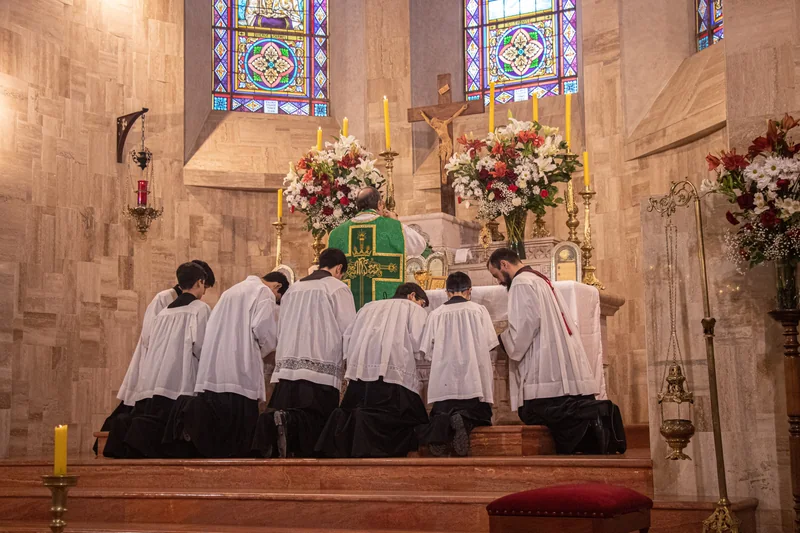
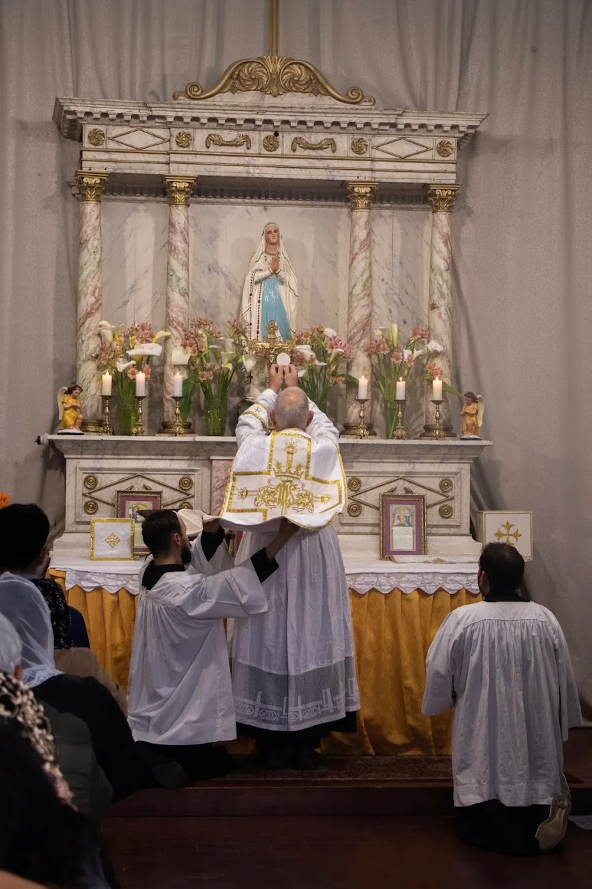
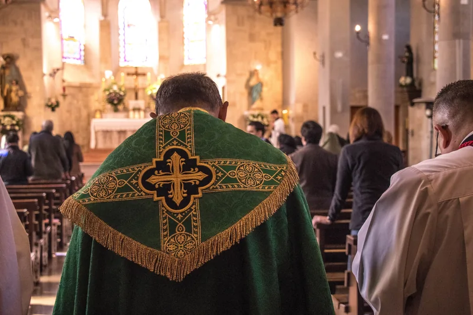

Apostolado de la Fraternidad
Centros de Misa en Chile
Direcciones, mapas y contactos de los lugares atendidos por el Priorato Cristo Rey. Las fechas y horarios de las misiones se anuncian en el calendario semanal.
Consultar el calendario semanal ›
Viña del Mar
Capilla San José de los Ángeles
Pasaje López 126, Recreo, Viña del Mar.
Dirección y calendario Abrir mapa
La Serena
Fundo Santa Helena
Fechas de visita y horarios en el calendario semanal.
Lugar y calendario Abrir mapa
Temuco
Misión de Temuco
El lugar de celebración cambia según la fecha. Contacto: Marcelo Villagra, +56 9 8231 2511.
Contacto y calendarioInformación actualizada
Consulte la semana vigente
Las fechas y horarios de las misiones cambian. El calendario semanal es la referencia más reciente.
Abrir calendarioPara nuevos visitantes
¿Busca una Misa?
Si está buscando una Misa tradicional en otra ciudad, consulte también el localizador oficial de la Fraternidad.
Buscar un centro